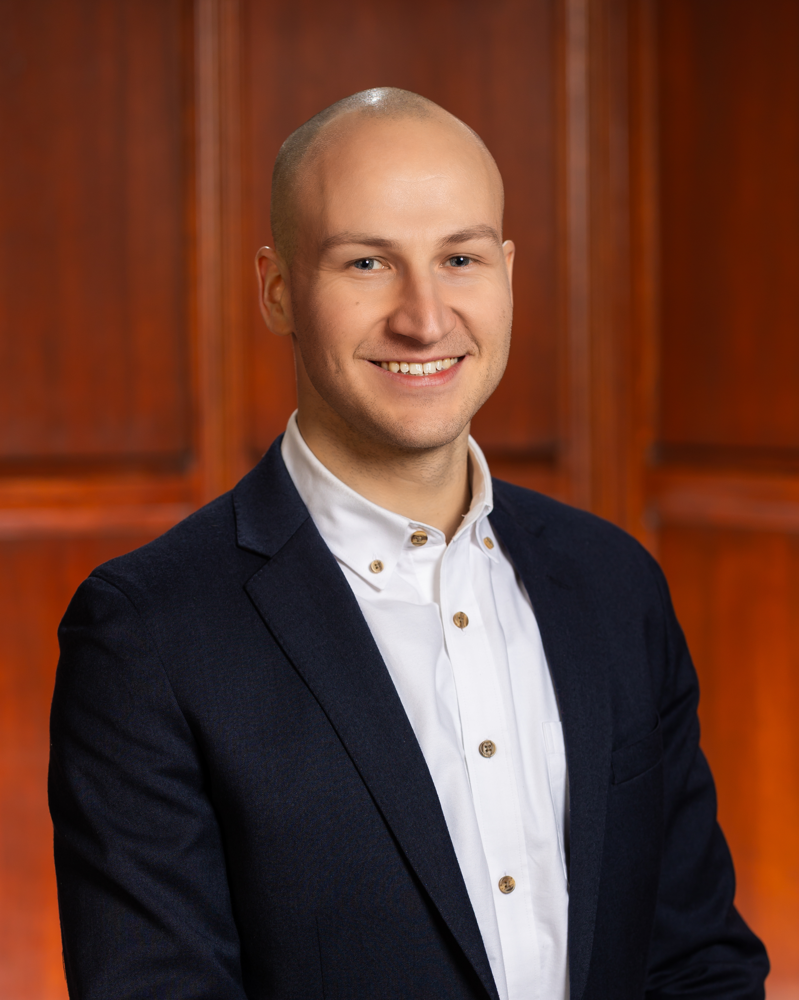

About Our Team
We are a group of passionate graduate students dedicated to advancing research and
understanding in global affairs, public health, and technology. Our project is made
possible by the support of our professors and teaching fellows.
❤️
Special thanks to Dhrumil Mehta, Aarushi Sahejpal, and Asa Royal.
❤️
Chris Cooper
MPP Candidate at the Harvard Kennedy School focused on US-Asia foreign policy, cross-strait relations, and emerging technologies in great power competition. Former Fulbright grantee in Taiwan; BA in Political Science from UC Berkeley.

Mandy Tao
MPH candidate at the School of Public Health. Over a decade of healthcare experience across Asia, Europe, and North America. Passionate about innovative solutions and cutting-edge technology.

Jack Lennon
G1 in the Davis Center's REECA MA program, focusing on post-Cold War U.S.-Russian relations. Researches Russian and Ukrainian participation in NATO-led peace enforcement missions in Bosnia and Kosovo. Student associate with Belfer Center's Russia Matters project.